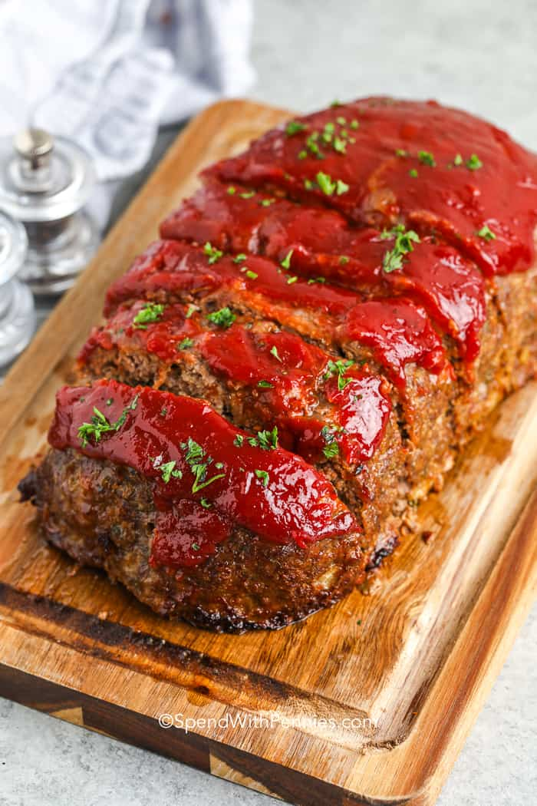

Minkloaf

What to do with that leftover mink?
This quick and easy recipe will use up that leftover mink meat in the back of your fridge!
Ingredients
- 1 ½ pounds ground mink
- 1 large egg
- 1 onion, chopped
- 1 cup milk
- 1 cup dried bread crumbs
- 2 tablespoons brown sugar
- 2 tablespoons prepared mustard
- ⅓ cup ketchup
Steps
- Preheat oven to 350 degrees F (175 degrees C)
- In a large bowl, combine the mink, egg, onion, milk and bread OR cracker crumbs. Season with salt and pepper to taste and place in a lightly greased 9x5-inch loaf pan, or form into a loaf and place in a lightly greased 9x13-inch baking dish.
- In a separate small bowl, combine the brown sugar, mustard and ketchup. Mix well and pour over the minkloaf.
- Bake at 350 degrees F (175 degrees C) for 1 hour.